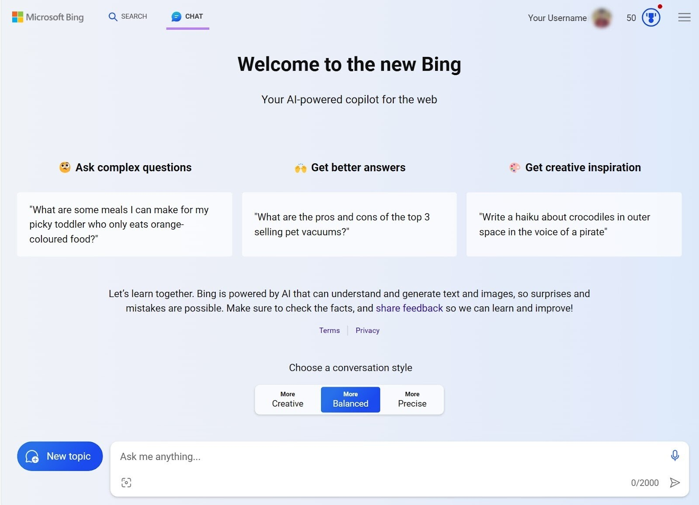

Más información
Soy CEO de la empresa OpenAI, empresa de investigación y despliegue del uso de la inteligencia artificial de manera beneficiosa.
Las principales areas de enfoque son los modelos generativos, la seguridad, la robótica y el lenguaje natural. Además, se ofrece un servicio de API para construir modelos propios y personalizados
OpenAI se fundó en 2015 por Ilya Sutskever, Greg Brockman, Trevor Blackwell, Andrej Karpathy y con Sam Altman y Elon Musk como miembros iniciales de la junta
Se ha desarrollado junto con Microsoft, chat Bing, que parte de Chat GPT Plus
 Volver a inicioDatos de interés
2020 WorldCoin (proyecto de criptomoneda biométrica)
mediante el reconocimiento del iris garantiza la privacidad de cada usuario

Colaboracion con Microsoft, los sistemas de OpenAI se ejecutan en una plataforma basada en
Azure (sistemas Cloud)

El 15 de febrero se presento el generador de texto a video Sora